Sistema Solar
O Sistema Solar é formado pelo Sol e por todos os corpos celestes que giram ao seu redor, como planetas, luas, asteroides e cometas. Ele surgiu há aproximadamente 4,6 bilhões de anos. Existem oito planetas no Sistema Solar, cada um com características próprias, como tamanho, temperatura e composição. A gravidade do Sol mantém esses corpos em suas órbitas.
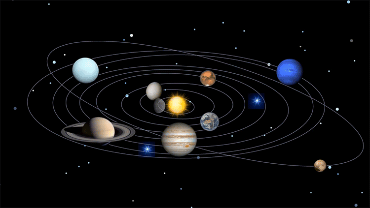
Planeta Mercúrio
Mercúrio é o planeta mais próximo do Sol e também o menor do Sistema Solar. Sua superfície é rochosa e coberta por crateras, semelhantes às encontradas na Lua. Como possui uma atmosfera muito fina, apresenta temperaturas extremamente altas durante o dia e muito baixas durante a noite. Mercúrio não possui luas.
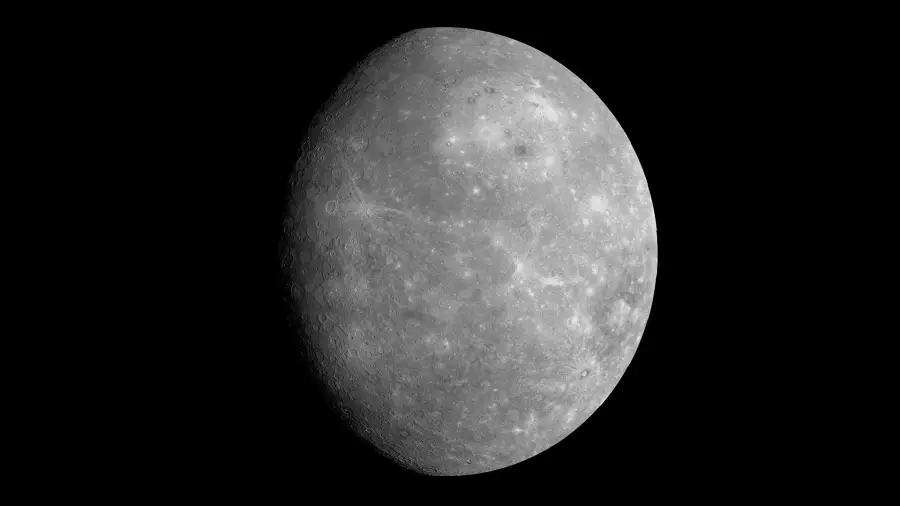
Planeta Vênus
Vênus é o segundo planeta a partir do Sol e possui tamanho semelhante ao da Terra. Sua atmosfera é muito densa e rica em dióxido de carbono, provocando um intenso efeito estufa. Por isso, é o planeta mais quente do Sistema Solar, com temperaturas próximas de 465 °C na superfície. Vênus não possui luas e gira em sentido contrário ao da maioria dos planetas.
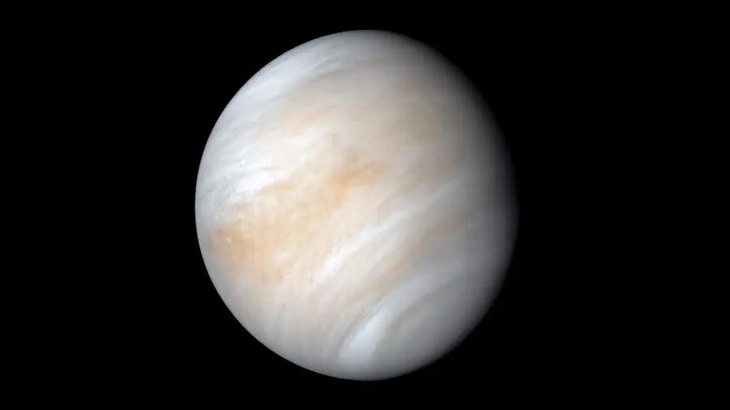
Planeta Terra
A Terra é o terceiro planeta a partir do Sol e o único conhecido que abriga vida. Sua superfície possui oceanos, continentes e uma atmosfera que ajuda a manter temperaturas adequadas para muitos seres vivos. A presença de água líquida é uma de suas características mais importantes. A Terra possui um satélite natural, a Lua.
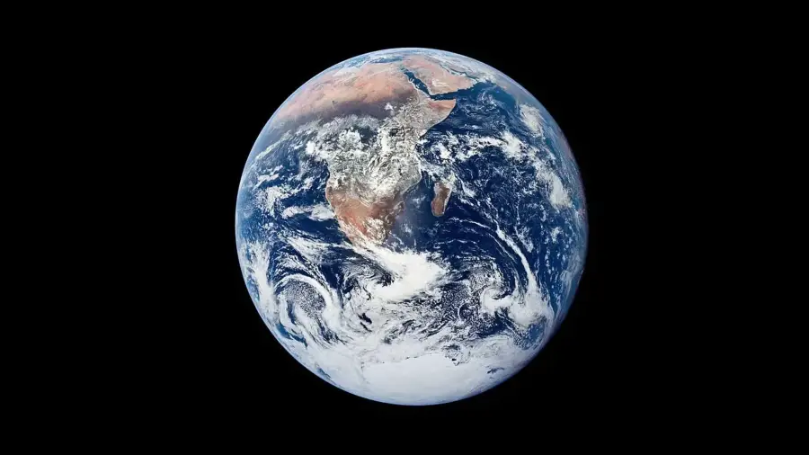
Planeta Marte
Marte é conhecido como o planeta vermelho devido à presença de óxido de ferro em seu solo. Ele possui uma atmosfera fina, temperaturas baixas e marcas de antigas atividades relacionadas à água em sua superfície. Marte abriga o Monte Olimpo, um dos maiores vulcões conhecidos do Sistema Solar. O planeta possui duas pequenas luas: Fobos e Deimos.
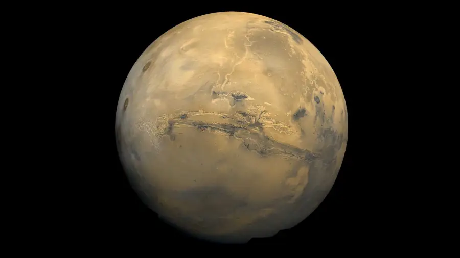
Planeta Júpiter
Júpiter é o maior planeta do Sistema Solar e é formado principalmente por hidrogênio e hélio. Ele possui faixas de nuvens coloridas e uma enorme tempestade conhecida como Grande Mancha Vermelha, que existe há séculos. Júpiter tem um sistema de anéis pouco visível e muitas luas, incluindo Europa, que pode possuir um oceano sob sua superfície gelada.
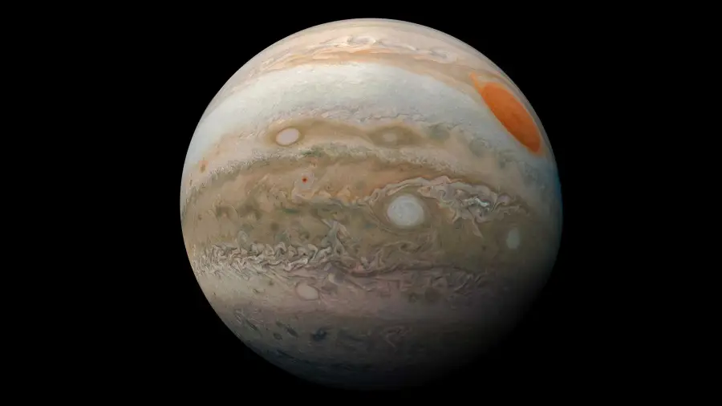
Planeta Saturno
Saturno é famoso por seus impressionantes anéis, formados principalmente por partículas de gelo, poeira e fragmentos rochosos. É o segundo maior planeta do Sistema Solar e, assim como Júpiter, é um gigante gasoso. Saturno possui muitas luas, entre elas Titã, que apresenta uma atmosfera densa e lagos de metano e etano líquidos em sua superfície.
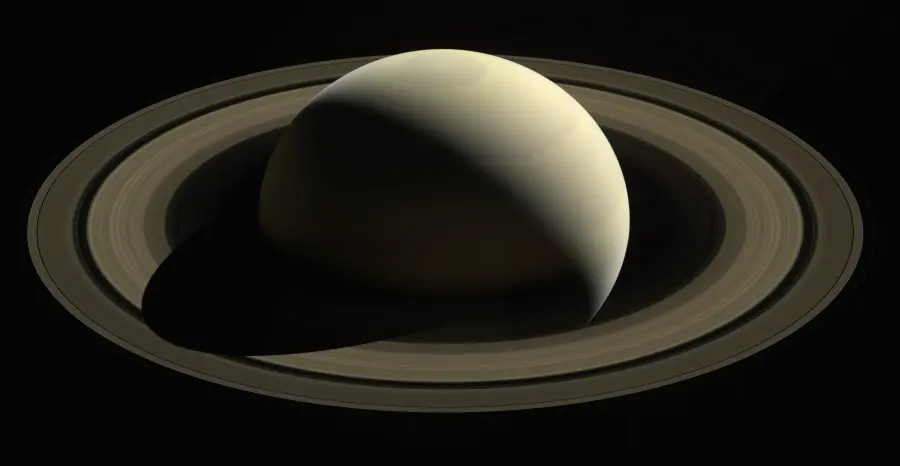
Planeta Urano
Urano é um gigante de gelo que apresenta uma coloração azul-esverdeada devido ao metano presente em sua atmosfera. Ele possui temperaturas extremamente baixas e um sistema de anéis. Uma de suas características mais curiosas é a inclinação extrema de seu eixo de rotação, fazendo com que pareça girar de lado. Urano também possui diversas luas.
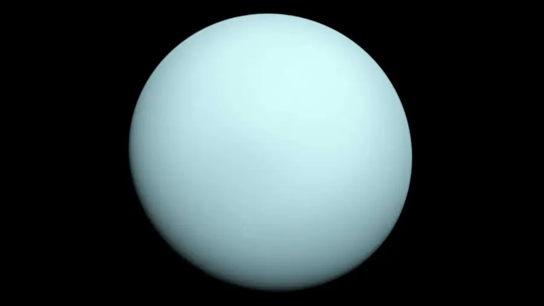
Planeta Netuno
Netuno é o planeta mais distante do Sol e um gigante de gelo com uma atmosfera azulada. Ele apresenta ventos extremamente rápidos, entre os mais intensos já registrados no Sistema Solar. Por estar muito longe do Sol, recebe pouca energia solar e possui temperaturas muito baixas. Sua maior lua é Tritão, que apresenta uma órbita em sentido contrário à rotação de Netuno.
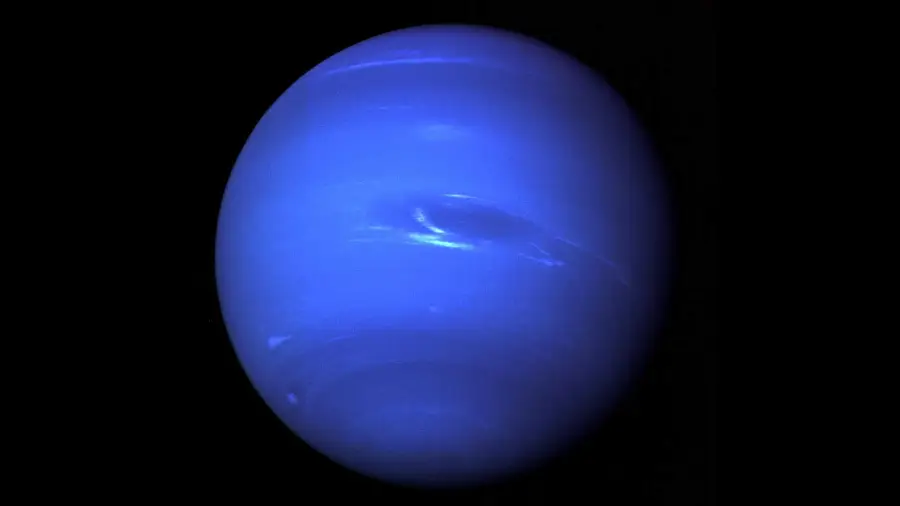
Lua
A Lua é o único satélite natural da Terra e influencia fenômenos como as marés dos oceanos. Sua superfície possui crateras, montanhas e grandes planícies formadas por antigas atividades vulcânicas. Ela não produz luz própria: o brilho que vemos é a luz do Sol refletida em sua superfície. Suas fases, como lua cheia e lua nova, acontecem conforme muda a parte iluminada que observamos da Terra.
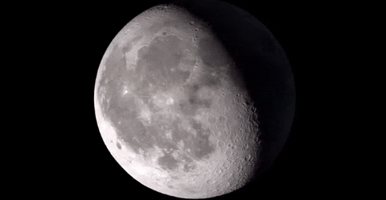
Sol
O Sol é a estrela localizada no centro do Sistema Solar e a principal fonte de luz e calor para a Terra. Ele é composto principalmente por hidrogênio e hélio, gases que participam de reações nucleares responsáveis pela liberação de energia. Sua gravidade mantém os planetas em órbita. Sem a energia solar, a vida como conhecemos na Terra não seria possível.
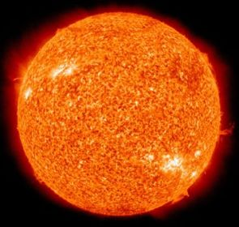
Manchas no Sol
As manchas solares são regiões da superfície visível do Sol que parecem mais escuras porque são mais frias do que as áreas ao redor. Elas surgem devido a concentrações intensas de campos magnéticos. Apesar da aparência escura, continuam extremamente quentes. A quantidade de manchas varia ao longo do tempo e está relacionada à atividade magnética do Sol.
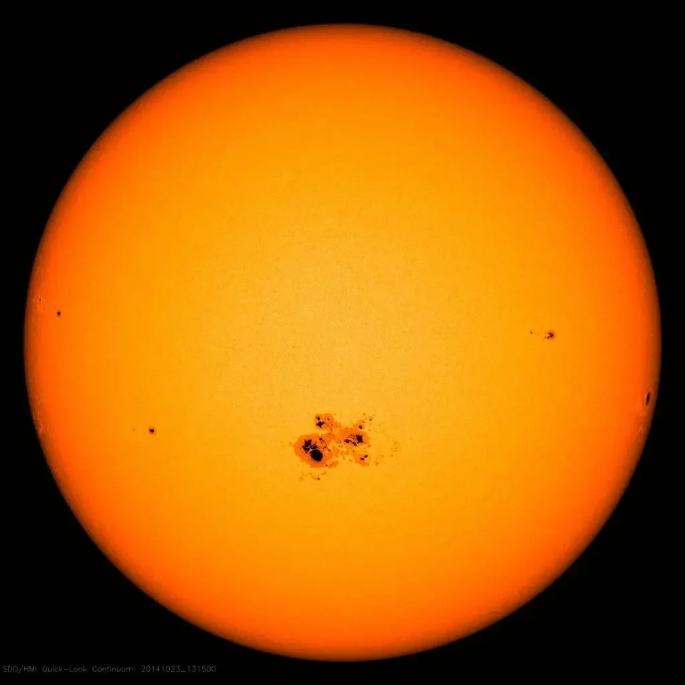
Via Lactéa
A Via Láctea é a galáxia onde está localizado o Sistema Solar. Ela contém bilhões de estrelas, além de planetas, nuvens de gás, poeira cósmica e outros objetos celestes. Sua estrutura é semelhante a um grande disco com braços espirais, e o Sol está situado em uma região chamada Braço de Órion. Como estamos dentro dessa galáxia, vemos uma faixa brilhante no céu noturno formada pela luz de inúmeras estrelas.
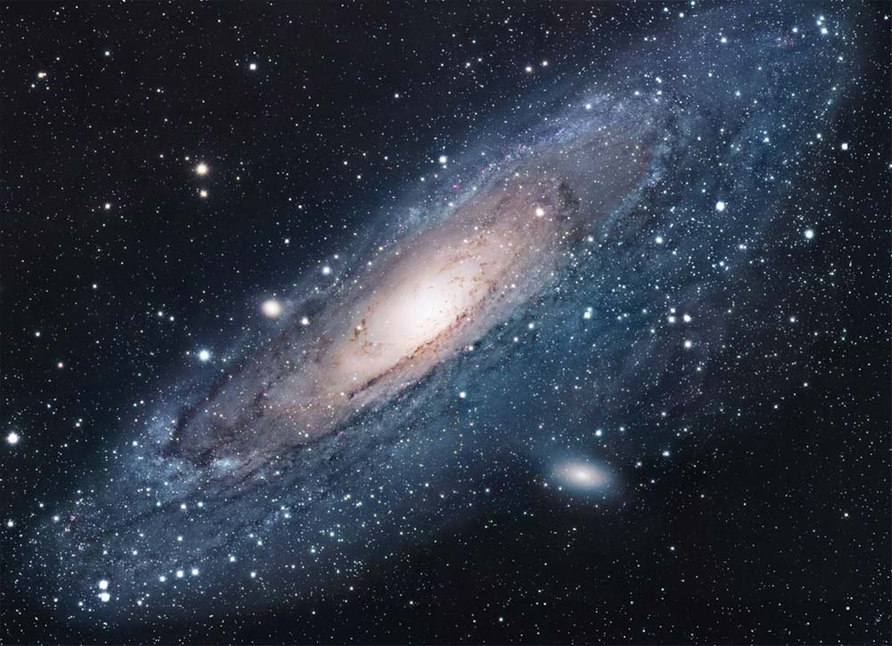
Buraco Negro
Um buraco negro é uma região do espaço onde a gravidade é tão intensa que nada consegue escapar de dentro de seu limite, nem mesmo a luz. Muitos se formam a partir do colapso de estrelas muito massivas, embora existam diferentes tipos. A matéria ao redor pode aquecer e emitir muita luz antes de cair nele. No centro da Via Láctea existe um buraco negro supermassivo chamado Sagitário A*.
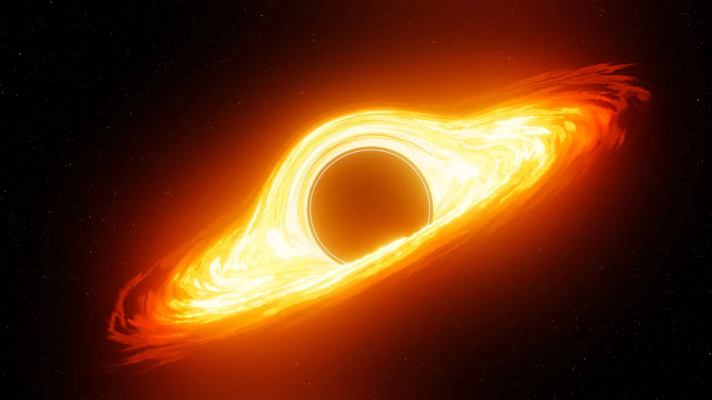